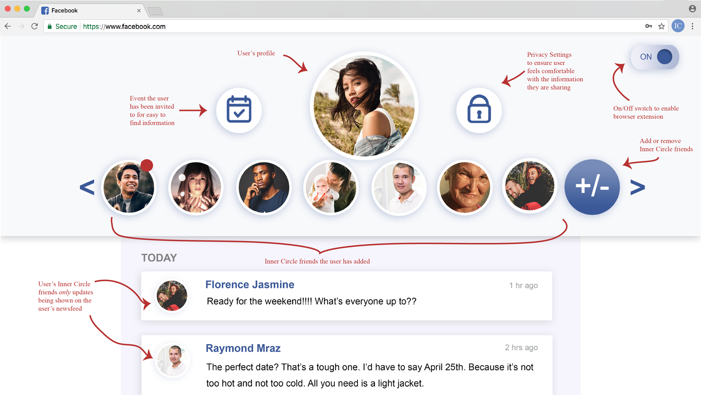

People over the age of 65 have a difficult time using modern technology due to reasons including but not limited to; a delayed exposure in life to computers, privacy fears and, physical and mental differences that are part of natural development. Inner Circle is a web plugin that will allow users over the age of 65 to connect with their loved ones and keep in contact using modern communication. By enabling Inner Circle through their web browser, users will be able to use their Facebook account in a simplified and accessible way.
My primary goal for this project was to reduce the frustration my target audience faces when confronted with Facebook's interface. This would be measurable by the amount of time it takes for my user testing group to complete common tasks on Facebook vs the amount of time it takes for the same group to complete the same tasks with Inner Circle.
User ResearchThe target audience is users who are 65 years old or older with varying skill levels and understanding of modern technology. This age group has been targeted because the design choices made on Facebook, among other web apps, have created difficulties for senior citizens to navigate through. The difficulties include but are not limited to; cluttered screens, too many options, small text, and icons that aren’t defined. Creating an account is one thing, but actually using Facebook to communicate is another. There are multiple blockers, including the fear of their privacy being lost and, fear of everyone seeing a mistake they’ve made, preventing those who are not as familiar with technology from using Facebook in a ‘typical user’ way (validated through user survey and interviews).
I initiated research by creating a survey for my target audience that covered information like what do they use Facebook on (smartphone, tablet, laptop, etc.), how long are they on Facebook for daily, what are they using Facebook for, etc. Prior to this survey, which was followed up by interviews, I had found research that indicated that the majority of this userbase used tablets more than any other tech. However, I was able to determine that this is no longer the case and thus decided to design for web.
While researching my target audience, I was able to find a secondary audience that would benefit from Inner Circle: users who want to use Facebook less. The target age range I selected for this user group is 25 - 35 years old as these users were among the first to create Facebook accounts, and were the targeted audience at the time when it went public in 2006. This age group has been on Facebook for so long that a large part of their relationships is only maintained on Facebook, therefore making it more difficult to get away from having a Facebook profile. That being said, a rising number of this age group have been trying to distance themselves from Facebook which I was able to validate through interviews with this audience.
User testing was conducted throughout the development of Inner Circle with the same scenarios each time. The first test was done using the current Facebook interface, the second was done with an Inner Circle prototype using Invision, and the third was done with the final product. All user testing sessions were recorded for further assessment.
While researching design choices that were best suited to my target audience, I discovered how beneficial it is to make all designs accessible in order to get the user feeling comfortable and confident when using your product, even if that means changing some aesthetics and features. The accessible design choices I made in Inner Circle are reflected in the size, colour, font choices and overall white space of the design. Each choice was made with intention that was a result of my research and speaking with my target audience.
 OutcomeEach user was able to complete the provided scenarios in a noticeably faster time frame from when they used Facebook vs when they used Inner Circle. The average time to complete the three scenarios using Facebook was 00:04:01, and the average time to complete those same scenarios using Inner Circle was 00:01:07.